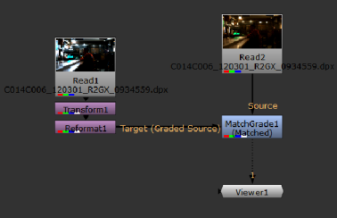

| 1。 | 选择 颜色 > MatchGrade 将 MatchGrade 节点插入脚本。 |
| 2. | 执行以下操作: |
• 连接 MatchGrade's 源 输入到要应用颜色变换的剪辑。
• 连接 目标 输入到要匹配的剪辑。这应该是一个分级版本 源 .
• 将查看器连接到 MatchGrade 的输出。
| 3. | 在 MatchGrade 属性中，确保 任务 设置为 匹配分级源 . |
| 4. | 要提取烘焙级，匹配级需要像素到像素之间的对应关系 源 和 目标 剪辑。如果剪辑在时间和空间上没有对齐，例如重新格式化目标剪辑时，请单击 将目标与源对齐 在 MatchGrade 节点的上游添加转换节点和重新格式化节点。 |

提示: 如果目标包含源中不存在的区域，例如黑色边框，则可以启用 作物目标 。单击 将目标与源对齐 当 作物目标 启用为生成矩形裁剪 目标 输入。
| 5. | 如果您希望 MatchGrade 从覆盖序列中特征颜色的选定参考帧中计算单个全局级别，并将该级别应用于 源 序列，继续 分析参考框架 。在这种模式下，您可以将等级导出到 OCIOFileTransform 或 OCIOCDLTransform 节点，以便在脚本中的其他位置重新使用等级。 |
如果您宁愿让 MatchGrade 逐帧计算本地等级，以便颜色变换根据当前帧更新，请继续执行 每帧自动分析 。在这种模式下，您不能导出等级以在其他地方重新使用。
| 1。 | 在 MatchGrade 属性中，确保 分析 设置为 分析参考框架 . |
| 2. | 如果你只想颜色匹配图像的某些区域，请确保在 源 输入的 alpha 通道。然后，设置 面具 要: |
• 阿尔法 -使用 alpha 通道作为掩模。等级仅限于 alpha 通道的非黑色区域。
• 倒阿尔法 -反转 alpha 通道并将其用作掩模。等级仅限于 alpha 通道的非白色区域。
注意:
当
面具
控件设置为除
没有
,一个额外的
将坡度应用于蒙面区域
显示控件。
默认情况下启用此控件，但您可以禁用它来将级别应用于整个图像, 允许您从选定的区域计算等级，并将其应用于整个图像，而无需导出 LUT。
| 3. | 设置 输出 到 目标 . |
MatchGrade 显示 目标 观众中的镜头。
| 4. |
要选择要在分析中使用的匹配级别的参考帧，请播放整个序列。当你找到覆盖序列中特征颜色的框架时，点击
|
通常，您设置的参考帧越多，匹配级别就越能够匹配颜色。
提示: 您也可以设置 目标 到 匹配 和 分析 到 每帧自动分析 预览设置参考框架的位置。
| 5. | 设置完参考框架后，使用 变换 下拉菜单选择如何计算等级: |
• 3D LUT -将等级计算为 3D 查找表 (LUT)。这允许您将等级导出到 。Csp 格式，您可以与 OCIOFileTransform 节点一起使用。
• CDL -计算等级作为颜色决策列表 (CDL)。这允许您将等级导出到 OCIOCDLTransform 节点。
注意: 的 CDL 变换是有限的，不能为所有类型的颜色变换建模。在大多数情况下，选择 3D LUT 给出最好的结果。
| 6. | 设置 输出 回到 匹配 并单击 分析参考框架 . |
MatchGrade 计算匹配所需的变换 源 图像到 目标 图像。
| 7. | 要评估结果，请选择 MatchGrade 节点并按 D 重复切换原来的 源 图像和分级输出。 |
| 的 源 图像。 | 的 目标 图像。 |
| 颜色匹配的结果。 |
| 8。 | 如果您对结果不满意，请尝试以下一项或多项: |
• 设置更多参考帧。
• 使用 前 LUT 下拉菜单指定用于分析的 1D 整形器 LUT: 线性 或 对数 .
• 增加 LUT 分辨率 价值。这是匹配存储颜色转换的查找表 (LUT) 的分辨率。较高的值可以改善结果，但也会增加处理时间。最大值为 64。
要更新结果，请单击 分析参考框架 再次。
| 9. | 如果你设置 变换 到 CDL 在步骤 5 中，您可以通过调整手动微调等级 坡度 , 偏移 , 权力 ,和 饱和 。的 锁 右侧的控件阻止在单击时重新计算值 重新计算 CDL ,允许您手动设置一些值，并自动估计其他值。例如，您可以调整和锁定 坡度 和 偏移 然后单击 重新计算 CDL 自动重新计算 权力 和 饱和 . |
| 10. | 如有必要，可以导出计算的坡度并将其应用于脚本中的其他节点。如何做到这一点取决于您选择将等级计算为 3D LUT 还是 CDL: |
• 如果你设置 变换 到 3D LUT ,您可以将 LUT 写入 。Csp 文件并创建一个 OCIOFileTransform 节点，您可以在脚本中的其他位置使用该节点应用相同的等级。为此，请输入文件的路径和名称 。Csp 文件中的 LUT 输出文件 字段并单击 写 导出 LUT。然后，单击 创建 OCIOFileTransform 创建一个 OCIOFileTransform 节点，适用的颜色变换的 。Csp 文件。

• 如果你设置 变换 到 CDL ,您可以单击 创建 OCIOCDLTransform 创建一个 OCIOCDLTransform 节点，该节点使用 CDL 输出 MatchGrade 属性的部分。

| 1。 | 在 MatchGrade 属性中，设置 分析 到 每帧自动分析 . |
MatchGrade calculates the transform needed to match the Source image to the Target image.
| 2. | If you only want to color match certain areas of the image, make sure there is a mask in the Source input's alpha channel. Then, set Mask to either: |
• Alpha - to use the alpha channel as a mask. The grade is limited to the non-black areas of the alpha channel.
• Inverted Alpha - to invert the alpha channel and use that as a mask. The grade is limited to the non-white areas of the alpha channel.
| 3. | 要评估结果，请选择 MatchGrade 节点并按 D 重复切换原来的 源 图像和分级输出。 |
或者，您可以使用 输出 “匹配级别属性” 中的下拉菜单可选择在查看器中显示的内容:
• 匹配 -查看颜色匹配的结果。
• 源 -查看 源 输入。
• 目标 -查看 目标 输入。
| The Source image. | The Target image. |
| The color-matched result. |
| 4. | 如果你对结果不满意，试着增加 LUT 分辨率 价值。这是匹配存储颜色转换的查找表 (LUT) 的分辨率。 |
较高的值可以改善结果，但也会增加处理时间。最大值为 64。
| 5. | 如有必要，您也可以使用 前 LUT 下拉菜单指定用于分析的 1D 整形器 LUT: |
• 自动检测 -自动检测使用的最佳预查找表。
• 线性 -使用线性预查找表。
• 对数 -使用对数前 LUT。
|
|